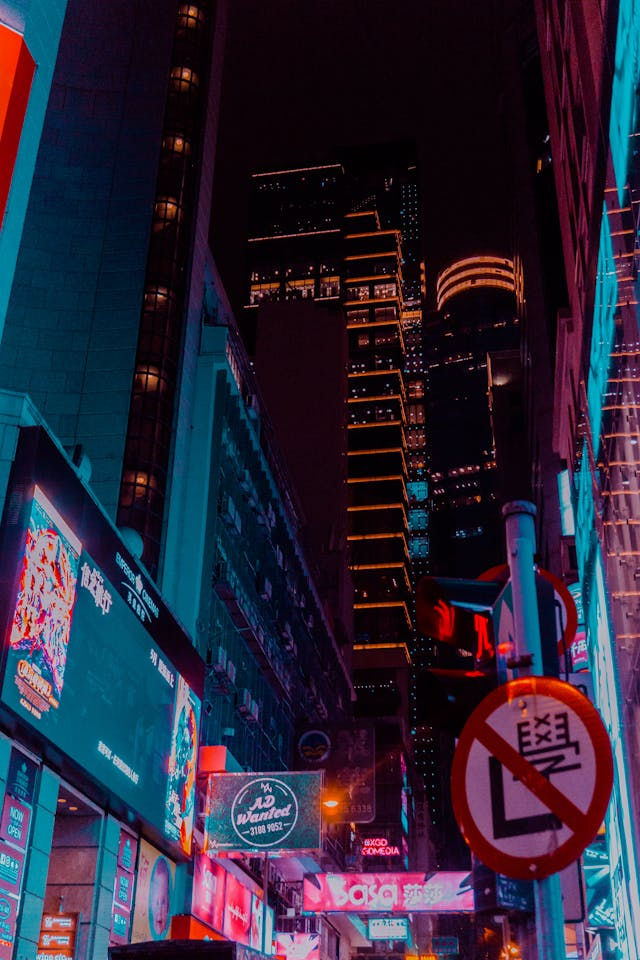
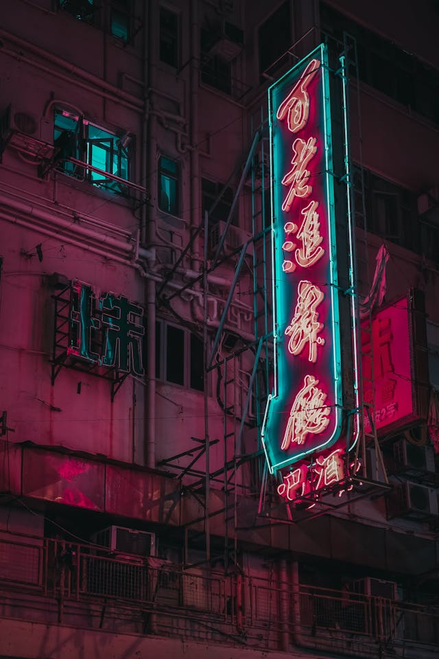

O que é Cyberpunk?
Cyberpunk é um gênero que nos transporta para um futuro onde a tecnologia avançada coexiste com uma sociedade profundamente desigual e marcada por um forte contraste entre o progresso tecnológico e a decadência urbana. É uma visão distópica, onde a esperança é substituída por uma sensação de fatalismo e os personagens, frequentemente marginalizados, lutam por sua sobrevivência em um mundo dominado por corporações poderosas.
A Essência do Cyberpunk:
-
Alta Tecnologia e Baixa Qualidade de Vida: A característica mais marcante do cyberpunk é a paradoxal combinação de avanços tecnológicos impressionantes com uma sociedade em ruínas. Cidades megalopolíticas, com megaconstruções e neon piscante, contrapõem-se à pobreza e à violência que assola as ruas.
-
A Desigualdade como Motor da Narrativa: A divisão entre os que detêm o poder e a tecnologia e aqueles que são explorados é um tema central. As corporações, muitas vezes com nomes como "OmniCorp" ou "Ares", controlam tudo, desde a economia até a vida das pessoas, enquanto os cidadãos comuns lutam por sua sobrevivência.
-
A Individualidade em um Mundo Massificado: Os personagens cyberpunk são, em sua maioria, anti-heróis: hackers, mercenários, rebeldes que desafiam o sistema. Eles são indivíduos únicos em um mundo que busca a homogeneização, e suas histórias exploram temas como identidade, livre-arbítrio e o que significa ser humano em um mundo cada vez mais artificial.
-
A Estética Cyberpunk: O visual cyberpunk é inconfundível: neon, cores vibrantes, paisagens urbanas futuristas, interfaces digitais complexas e elementos visuais que remetem à cultura hacker e punk. Essa estética, que se tornou um ícone da cultura pop, influencia desde a moda até a arquitetura.
Origens e Influências:
As raízes do cyberpunk podem ser encontradas na década de 1980, com a publicação de obras como "Neuromancer" de William Gibson, considerado o "bíblia" do gênero. Gibson criou um universo cyberpunk rico e detalhado, com termos como "cyberspace" e "jacking in" que se tornaram sinônimos do gênero. Outros autores importantes incluem Bruce Sterling, Neal Stephenson e Pat Cadigan.
O cyberpunk foi influenciado por diversas fontes, como a ficção científica clássica, o movimento punk, a filosofia pós-moderna e a cultura hacker. Essa mistura eclética de influências contribuiu para a criação de um gênero único e complexo.
Cyberpunk na Cultura Popular:
A influência do cyberpunk se estende muito além da literatura. O gênero deixou sua marca em diversas mídias, como:
-
Cinema: Filmes como "Blade Runner", "Matrix", "Ghost in the Shell" e "Akira" são exemplos clássicos de adaptações do cyberpunk para o cinema.
-
Videogames: Jogos como "Cyberpunk 2077", "Deus Ex", "Shadowrun" e a série "Deus Ex" oferecem experiências imersivas em mundos cyberpunk, permitindo que os jogadores explorem cidades futuristas e vivenciem as aventuras de hackers e mercenários.
-
Música: O cyberpunk influenciou diversos gêneros musicais, como o synthwave, o darkwave e o industrial, que utilizam sintetizadores e batidas eletrônicas para criar atmosferas sombrias e futuristas.
Em Resumo:
O cyberpunk é mais do que um simples gênero de ficção científica. É uma reflexão sobre a sociedade contemporânea, sobre os avanços tecnológicos e seus impactos na vida das pessoas. Ao explorar temas como desigualdade, alienação e a perda de humanidade, o cyberpunk nos convida a questionar o futuro que estamos construindo.
-  